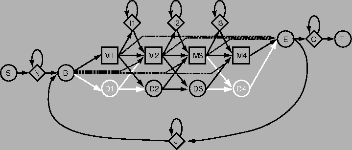

Lecture 22 Jan 2001 Per Kraulis
It turns out that sequence profiles are a special case of a more general mathematical approach, called hidden Markov models (HMMs). These methods were originally used in speech recognition before the were applied to biological sequence analysis. A well-defined formalism exists, which helps with the theoretical understanding of what can be expected when applying it to sequence analysis. This is an important advantage of using HMMs instead of sequence profiles; the underlying theoretical basis is much more solid. Also, Bayesian statistics is used in several aspects of the method.
A Markov process is a physical process of a special, but common kind. The basic idea is that we have a physical system that stepwise goes through some kind of change. For example, it may be die (svenska: "tärning") that we throw time and again; the change is the transition from the new value to the next. An essential characteristic of a Markov process is that the change is dependent only on the current state. The history of what states the physical system has been in before does not matter.
One may view a protein (or DNA) sequence as the record of such a process. There is some hidden process that generates a sequence of amino-acid residues, where chance (based on specific probabilities) play an essential role in determining the exact sequence being produced. This is one (very crude) way of describing an HMM.
This approach can be applied in sequence motif searches. Given a multiple sequence alignment of a particular domain family, one uses statistical methods to build a specific HMM for that domain family. The probabilities that are required are estimated from the frequencies in the alignment, together with other data. This HMM can then be used to test other sequences whether they match this domain family or not. HMMs can be set up so that insertions, deletions and substitutions can be handled in sensible ways, and their probabilities estimated properly.
The plan (or topology) of an HMM determines which probabilities need to be estimated, and what kind of matches are allowed. For instance, it is perfectly possible to design an HMM plan that strictly forbids insertions and deletions. Here is an example of what an HMM plan may look like. This is the plan used in the popular HMMER software, and the image was taken from its documentation.
The abbreviations for the states are as follows: